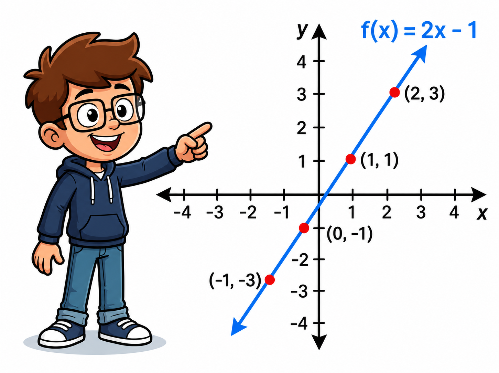

O que é uma Função Afim?
Conceito
A Função Afim, ou função do 1º grau, é qualquer função que possui a lei de formação:
f(x) = ax + b
Onde:
- a é o coeficiente angular (taxa de variação). Determina a inclinação da reta.
- b é o coeficiente linear (termo constante). Indica onde a reta cruza o eixo Y.
- x é a variável independente e f(x) (ou y) é a variável dependente.
Comportamento da Reta
O sinal do coeficiente a define a direção da reta no plano cartesiano:
- Função Crescente (a > 0): Quanto maior o valor de x, maior será o resultado de y (a reta sobe para a direita).
- Função Decrescente (a < 0): Quanto maior o valor de x, menor será o resultado de y (a reta desce para a direita).
Raiz (ou Zero) da Função: É o valor de x onde a reta corta o eixo X (quando f(x) = 0), calculado por x = -b / a.
Construindo o Gráfico na Prática
Vamoss ver um exemplo prático de uma função crescente com a lei: f(x) = 2x - 1 (onde a = 2 e b = -1).Para desenharmos o gráfico, escolhemos alguns valores para x e calculamos o respectivo y:
| Valor de x (Entrada) | Cálculo: f(x) = 2x - 1 | Valor de y (Saída) | Par Ordenado (x, y) |
|---|---|---|---|
| -1 | 2 × (-1) - 1 = -2 - 1 | -3 | (-1, -3) |
| 0 | 2 × (0) - 1 = 0 - 1 | -1 | (0, -1) |
| 1 | 2 × (1) - 1 = 2 - 1 | 1 | (1, 1) |
| 2 | 2 × (2) - 1 = 4 - 1 | 3 | (2, 3) |

Gráfico correspondente aos pares ordenados da tabela acima. Note que ela cruza o eixo Y no ponto (0, -1).
A Função Afim no Nosso Cotidiano
Mesmo sem perceber, usamos funções do 1º grau todos os dias sempre que existe um valor fixo somado a uma taxa variável:
1. Corrida de Táxi ou Aplicativo
Imagine uma corrida com bandeirada fixa de R$ 5,00 mais R$ 3,00 por quilômetro rodado (x).
Lei da função: f(x) = 3x + 5
Se você andar 10 km, pagará: f(10) = 3(10) + 5 = R$ 35,00.
2. Salário Fixo com Comissão
Um vendedor recebe um salário fixo de R$ 1.500,00 por mês mais R$ 50,00 de comissão por produto vendido (x).
Lei da função: f(x) = 1500 + 50x
Se vender 8 produtos, receberá: f(8) = 1500 + 50(8) = R$ 1.900,00.